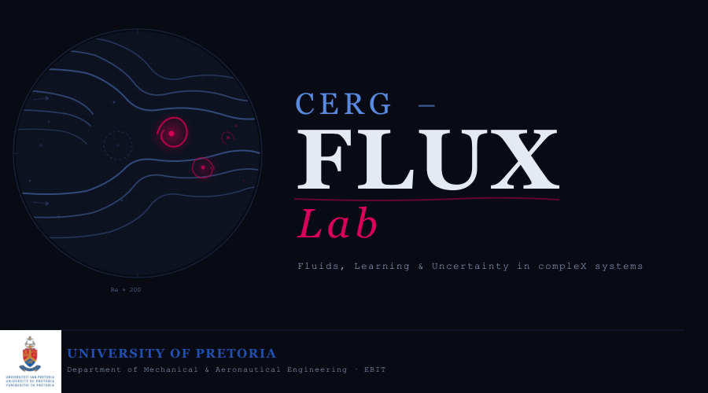

Fluids, Learning, and Uncertainty in compleX systems
Pronounced "SURGE-FLUX", CERG-FLUX Lab is a research subgroup within the Clean Energy Research Group (CERG) at the University of Pretoria, developing physics-informed computational methods to understand transport phenomena — from turbulent multiphase flows and lattice Boltzmann dynamics to scientific machine learning, high-energy particle physics at CERN, and quantum technologies.
01 — Research Pillars
Our work spans five interconnected pillars, unified by a common thread: physics-informed computational simulation of transport phenomena.
Modelling complex transport in industrial and environmental systems — from air-core vortex formation in hydrocyclones to turbulent multiphase separation.
Mesoscale simulation of fluid dynamics through kinetic theory — coupling LBM with VOF and DEM for particle-laden and free-surface flows.
Physics-informed neural networks, neural operators, and hybrid architectures that embed governing equations as inductive bias for forward and inverse problems.
Contributing to the ATLAS experiment at CERN's Large Hadron Collider — UP's institutional Representative/Team Leader, advancing detector physics and data analysis.
Exploring quantum computing, quantum machine learning, and quantum sensing applications through the University of Pretoria Quantum Science and Technology group (UPQuST).
02 — Vision
Physics doesn't respect disciplinary boundaries. Neither should the methods we use to understand it.
CERG-FLUX Lab exists at the intersection of fundamental physics, computational mathematics, and modern machine learning. We believe the most impactful advances in simulation science emerge when classical methods — rooted in conservation laws and kinetic theory — are augmented by data-driven approaches that respect the physics they serve.
As a subgroup within the Clean Energy Research Group, CERG-FLUX Lab brings a focused computational identity to CERG's broader mission. Our research programme draws on industrial CFD, mesoscale LBM, deep learning, particle physics, and quantum information — not as parallel silos, but as a coherent portfolio connected by the computational simulation of transport phenomena.
We value depth over breadth, rigour over hype, and building over buying.
03 — People
CERG-FLUX Lab is a research subgroup within the Clean Energy Research Group at the University of Pretoria.
Principal Investigator · Associate Professor
Muaaz's career spans industrial CFD at Hatch Africa, geospatial data science and climate foundation models at IBM Research, and academic appointments at UJ and UP. His PhD work on hydrocyclone CFD modelling benchmarked VOF, ASM, Eulerian, and LBM-VOF approaches. He serves as UP's institutional representative in the ATLAS Collaboration, vice-president of the South African Association for Theoretical and Applied Mechanics (SAAM), and vice-president of the South African National IUTAM Committee.
University of Johannesburg
CFD modelling in the ATLAS ITk
Exotic Higgs decay in BSM searches at ATLAS
University of Johannesburg
Exotic Higgs decay in BSM searches at ATLAS
University of Pretoria
CFD modelling in the ATLAS ITk
Exotic Higgs decay in BSM searches at ATLAS
Quantum Machine Learning for Rare Particle Signatures in High-Dimensional Physics Data
04 — Publications
Dynamically loaded from Semantic Scholar. For a full list, see the PI's Google Scholar.
05 — In the News
06 — Infrastructure
We build and operate local HPC infrastructure and leverage national supercomputing facilities — automation-first, purpose-built for research workloads.
South Africa's national supercomputing facility — petascale CPU and GPU clusters for large-scale simulation and ML workloads. chpc.ac.za
Multi-node cluster (mjolnir, legion) with full monitoring stack, SSH tunnels, systemd services, and a FastAPI dashboard.
Remote solve management for Fluent and CFX workloads across networked nodes with NFS-backed job submission.
Leverage IBM Quantum Processing Units for quantum computing/machine learning research and development via the CHPC QIC
Custom PINN training pipelines with physics-constrained loss functions, chain-rule normalisation, and PDE loss scheduling.
Lattice Boltzmann simulations with DEM coupling for particle-laden flows — unified runtime-flag-controlled source.
Tailscale mesh networking, Slurm job scheduling, dedicated head node, self-hosted RustDesk relay, Rocky Linux migration.
07 - Open Research Topics
The topics below are actively available for postgraduate and postdoctoral research within the CERG-FlUX Lab. They span our core pillars — CFD & LBM, high-energy physics, and quantum computing & machine learning — and often sit at the intersections between them. If a topic interests you, get in touch.
Incorporate a true multiphase or two-phase VOF model in the Lattice Boltzmann Method capable of handling high-Reynolds-number flow with high density ratios and capturing reverse flow at outlet boundaries. Validated through a case study on air-core formation in a hydrocyclone using existing experimental data.
Supervisor: Prof M. Bhamjee
Apply and refine the Lattice Boltzmann Method for simulating multiphase flows in gas-solid cyclone separators used in mineral processing. Assess strengths and limitations in handling turbulence, phase interactions, and particle separation efficiency, with validation against experimental data.
Supervisor: Prof M. Bhamjee
Develop a high-performance lattice Boltzmann solver targeting multiphase flow and conjugate heat transfer, leveraging GPU parallelism on CHPC Lengau/Sebowa clusters. Target clean energy and industrial applications requiring large-scale, time-resolved thermal-fluid simulation.
Supervisor: Prof M. Bhamjee
Use thermal lattice Boltzmann methods to simulate heat transfer and phase change at the pore scale in metal foam structures saturated with phase change materials. Investigate the interplay between foam morphology, porosity, and charging/discharging rates for compact energy storage.
Supervisor: Prof M. Bhamjee
Search for non-standard Higgs boson decay channels using LHC Run 3 and HL-LHC datasets. Develop novel analysis strategies for rare decay topologies with complex final states, contributing to global BSM physics searches through the ATLAS experiment.
Supervisor: Prof M. Bhamjee
Develop and benchmark classical and ML-based classification approaches for separating rare physics signals from Standard Model backgrounds in ATLAS data. Focus on interpretability, physics-informed feature engineering, and robustness to systematic uncertainties.
Supervisor: Prof M. Bhamjee
Investigate generative deep learning architectures (GANs, normalising flows, diffusion models) as fast surrogate replacements for full Geant4 detector simulation in the ATLAS calorimeter, targeting orders-of-magnitude speedup while preserving physics fidelity.
Supervisor: Prof M. Bhamjee
Investigate quantum sensing modalities — including nitrogen-vacancy (NV) centre diamond magnetometry and superconducting quantum interference devices — for non-invasive, high-resolution characterisation of flow, temperature, and particle dynamics in mineral processing systems. Benchmark against conventional measurement techniques and assess feasibility for in-situ process monitoring in cyclone separators, flotation cells, and comminution circuits.
Supervisor: Prof M. Bhamjee
Investigate quantum-enhanced classification and anomaly detection for identifying rare particle signatures in ATLAS datasets. Benchmark variational quantum classifiers and quantum kernel methods against classical ML baselines on NISQ hardware and simulators.
Supervisor: Prof M. Bhamjee
Develop a novel hybrid modelling approach integrating the Lattice Boltzmann Method with Physics-Informed Neural Networks (PINNs), Graph Neural Networks (GNNs), and Generative Adversarial Networks (GANs) to enhance accuracy and computational efficiency of multiphase flow simulations. Test against traditional solvers and experimental data.
Supervisor: Prof M. Bhamjee
Integrate deep learning methods (PINNs, GNNs) with traditional numerical approaches to improve phase interaction predictions in CFD. Apply to industrial processes including cyclone separators and fluidised beds, evaluating performance against conventional models.
Supervisor: Prof M. Bhamjee
Investigate deep learning-based surrogate models for accelerating CFD simulations of high-Reynolds-number flows. Analyse trade-offs between accuracy and computational cost, testing against traditional numerical solvers and experimental datasets.
Supervisor: Prof M. Bhamjee
Explore quantum computing approaches to the collision and streaming steps of the Lattice Boltzmann Method, assessing potential speedups on gate-based quantum hardware. Benchmark quantum-classical hybrid LBM workflows against GPU-accelerated classical solvers for canonical flow problems.
Supervisor: Prof M. Bhamjee
Investigate nitrogen-vacancy (NV) centre diamond magnetometry and other quantum sensing modalities for non-invasive, high-spatial-resolution measurement of temperature and flow fields in compact heat transfer systems, benchmarking against conventional thermometry.
Supervisor: Prof M. Bhamjee
Develop a digital twin coupling GPU-accelerated LBM simulation with sensor data streams for real-time thermal monitoring and predictive control. Combine reduced-order LBM with ML-based state estimation for fast inference in operational environments.
Supervisor: Prof M. Bhamjee
Develop Bayesian and ensemble-based uncertainty quantification methods for lattice Boltzmann and ML-augmented CFD predictions, quantifying epistemic and aleatoric uncertainty in multiphase flow simulations and physics-informed surrogate models.
Supervisor: Prof M. Bhamjee
Train reinforcement learning agents to discover active flow control strategies (blowing, suction, surface actuation) within LBM simulation environments, targeting drag reduction or heat transfer enhancement. Assess transferability of learned policies to higher-fidelity solvers.
Supervisor: Prof M. Bhamjee
08 — Join Us
We are actively seeking motivated postgraduate students (MEng, MSc & PhD) and postdoctoral researchers with interests in CFD, LBM, scientific machine learning, high-energy physics, or quantum computing/machine learning and sensing. Funded positions are available through NRF, SA QuTI, UPQuST, and the ATLAS Collaboration.
Strong foundations in engineering, applied mathematics, computer science, software/computer engineering, or physics. Comfort with rigorous mathematics and writing code in Python, C++, or Fortran.
We read papers critically, ask good questions, document our work, and take ownership of our projects. We'd rather understand a method deeply than apply it blindly.
Positions are funded through the NRF, SA QuTI, UPQuST, and the ATLAS Collaboration. Multiple openings at MEng, MSc, PhD, and postdoctoral level.
You don't need to arrive as an expert in all of our pillars — nobody is — but you should bring curiosity about how things work at a fundamental level and the patience to work through hard problems carefully rather than rushing to results.
Get in touch →Please reach out to Prof Muaaz Bhamjee at muaaz.bhamjee@up.ac.za with a brief introduction, your CV, and any relevant work or project samples you're willing to share.